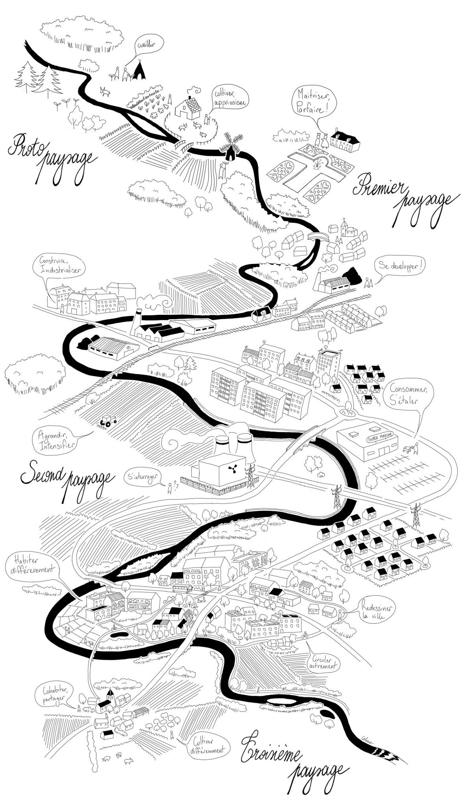

Le concept du troisième paysage
Du protopaysage au troisième paysage : comment l’Atelier lit l’évolution des territoires.
Le concept
Premier, second, troisième paysage.
Le premier paysage regroupe les dynamiques naturelles végétales laissées à leur libre développement : un Éden révolu où l’homme n’aurait pas encore imposé sa marque.
Le second paysage est celui de l’aire industrielle et de la volonté de l’homme moderne d’adapter son environnement à ses attentes : villes minérales, domestication végétale, schéma automobile global.
Le troisième paysage est la symbiose vers laquelle tend l’Atelier : composer entre les attentes et les usages de la société, sans dénaturer les paysages, en offrant à la nature un espace d’expression. Travailler cet équilibre, c’est préserver les paysages et les milieux, œuvrer pour la biodiversité et augmenter la qualité de vie.
Conscient de la dualité entre dynamiques urbaines et rurales, l’Atelier accompagne cet équilibre en conservant les spécificités de chaque milieu.
